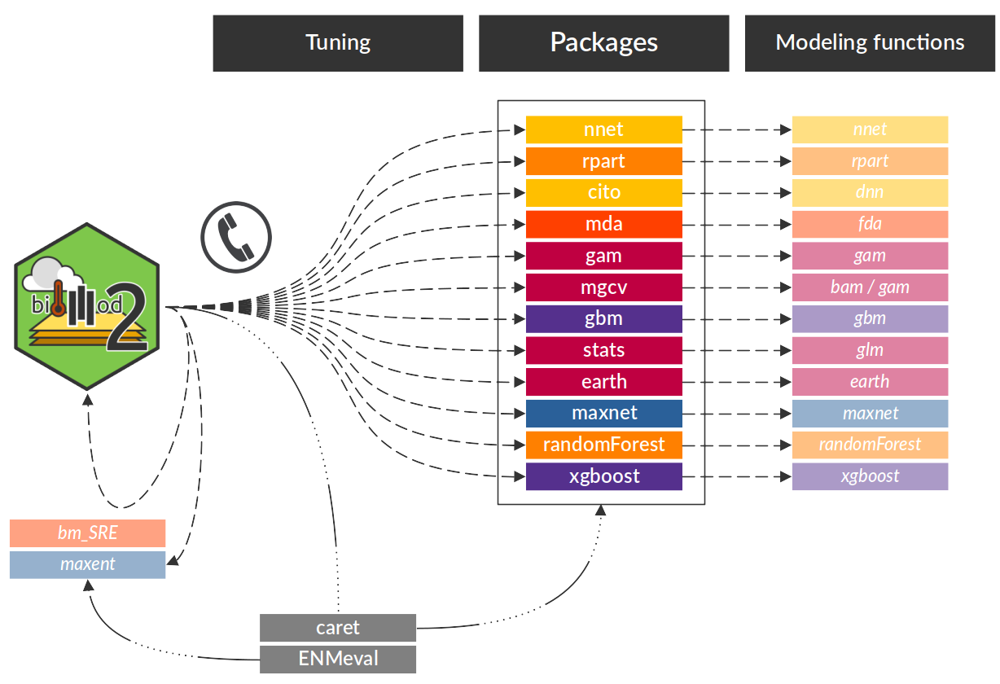
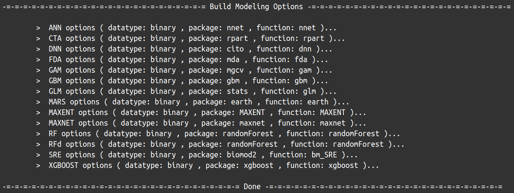
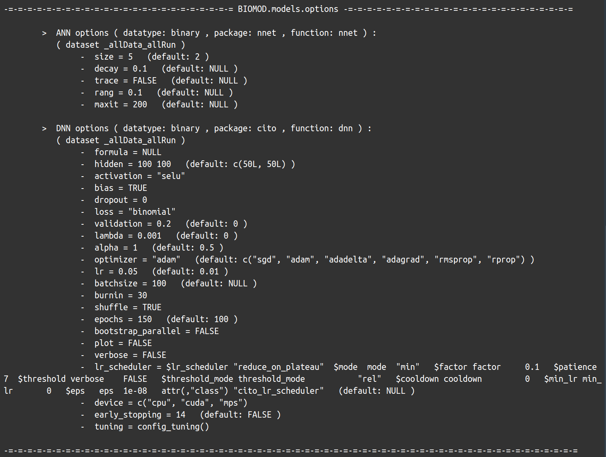
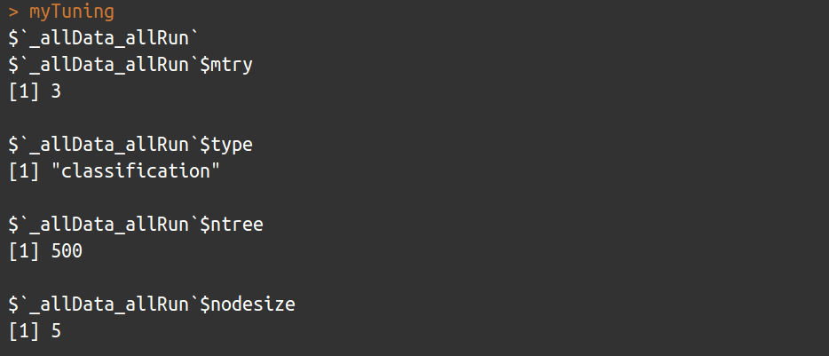

How it works ?
biomod2 is working as a wrapper, calling external
packages to use their single model functions. Modeling options are
automatically retrieved from these packages, allowing the use of all
arguments taken into account by these functions.
Note that there are 2 exceptions : the Surface Range
Envelop (SRE) model, which is directly coded within biomod2
package, and MAXENT java software, whose executable file is required in
the simulation folder to be used.

Model ID name
All this information, about which single models are available, from which package they come from, which function is called, is stored within the ModelsTable data object :
model type package func train
1 ANN binary nnet nnet avNNet
2 CTA binary rpart rpart rpart
3 DNN binary cito dnn tune
4 FDA binary mda fda fda
5 GAM binary gam gam gamLoess
6 GAM binary mgcv bam bam
7 GAM binary mgcv gam gam
8 GBM binary gbm gbm gbm
9 GLM binary stats glm glm
10 MARS binary earth earth earth
11 MAXENT binary MAXENT MAXENT ENMevaluate
12 MAXNET binary maxnet maxnet maxnet
13 RF binary randomForest randomForest rf
14 RFd binary randomForest randomForest rf
15 SRE binary biomod2 bm_SRE bm_SRE
16 XGBOOST binary xgboost xgboost xgbTree
17 CTA nonbinary rpart rpart rpart
18 DNN nonbinary cito dnn tune
19 FDA nonbinary mda fda fda
20 GAM nonbinary gam gam gamLoess
21 GAM nonbinary mgcv bam bam
22 GAM nonbinary mgcv gam gam
23 GBM nonbinary gbm gbm gbm
24 GLM nonbinary stats glm glm
25 MARS nonbinary earth earth earth
26 RF nonbinary randomForest randomForest rf
27 XGBOOST nonbinary xgboost xgboost xgbTreeThe ID name of each single models corresponds to the
concatenation of the model, package,
func and train columns.
For example
: ANN.nnet.nnet.avNNet for the Artificial Neural Network
model.
The type column specifies the data category, and some
models can be used for both possible cases :
-
binary, which relates to presence-absence
and presence-only data
(
data.type = 'binary'in BIOMOD_FormatingData) -
nonbinary, which relates to all abundance
data (
count,multiclass,ordinal,relative,abundance)
Set modeling options
Default
bm_ModelingOptions function returns for each selected single model both its informations and its default parameter values retrieved from its corresponding package.
myOptions <- bm_ModelingOptions(data.type = 'binary', strategy = 'default')
myOptions
slotNames(myOptions)
names(myOptions@options)


Note that some values are modified internally after
retrieval to ensure biomod2 proper functioning. However,
this represents minimum service and this strategy will often lead to bad
models or even some errors, as default values are often non-adapted to
species distribution modeling in general, and to specific dataset in
particular.
Note that MAXENT is a special case. As being called directly through its java executable software, the recovery of parameters is not automatic as for other algorithms relying on R packages and functions. Hence, the set of available parameters for MAXENT is fixed, and can be consulted within the documentation of bm_ModelingOptions function.
Bigboss
bigboss is a modified set, provided by
biomod2 team, tends to correct at least the species
distribution aspect. All parameter values for all single models are
available within the OptionsBigboss data
object.
myOptions <- bm_ModelingOptions(data.type = 'binary', strategy = 'bigboss')
myOptions
Note that this is still a general solution, not necessarily adapted to your data, and can show no significative improvements.
Tuned
With tuned options, some algorithms can be trained
over your data sets, mostly using the caret package
which calls a specific function to tune each model (see
train column in ModelsTable). With the
exception of SRE, which is internally optimized, and MAXENT, which can
be tuned thanks to the ENMevaluate function from ENMeval
package.
Here is the list of the parameters that can be tuned when calling bm_Tuning :
| algorithm | parameters |
|---|---|
| ANN |
size, decay,
bag
|
| DNN |
hidden, bias,
lambda, alpha, lr,
batchsize, epochs
|
| FDA |
degree, nprune
|
| GAM |
select, method,
span, degree
|
| GBM |
n.trees, interaction.depth,
shrinkage, n.minobsinnode
|
| MARS |
degree, nprune
|
| MAXENT |
algorithm, parallel,
tune.args, partitions, kfolds,
user.grp
|
| RF | mtry |
| RFd | mtry |
| SRE | quant |
| XGBOOST |
nrounds, max_depth,
eta, gamma, colsampl_bytree,
min_child_weight, subsample
|
For almost all algorithms (except MAXENT,
MAXNET and SRE), you can choose to
optimize the formula by setting
do.formula = TRUE, testing for different type
(simple, quadratic, polynomial,
s_smoother) and interaction level.
In the same way, variable selection can be run for
GLM and GAM if do.stepAIC = TRUE
(with MASS::stepAIC and gam::step.Gam
functions respectively).
myTuning <- bm_Tuning(model = 'RF',
tuning.fun = 'rf', ## see in ModelsTable
do.formula = FALSE,
bm.options = myOptions@options$RF.binary.randomForest.randomForest,
bm.format = myBiomodData)
myTuning
User-defined
The user.defined option allows to adjust yourself all
algorithm parameters, which means it can be a mix of everything :
- default or bigboss options, through
user.baseparameter - tuning of some algorithms
- manually defined parameter values, through
user.valparameter
Example : run 3 single models (RF,
GLM and MARS), using the bigboss
parameters as a basis and adapting them as much as possible to the data
and cross-validation parts
## Create 2 sets of random splitting
myBiomodCV <- bm_CrossValidation(bm.format = myBiomodData,
strategy = 'random',
nb.rep = 2,
perc = 0.8)
## ----------------------------------------------------------------------------------- ##
## Extract bigboss parameters for the 3 models
## Provide formated data (for formula)
## Provide cross-validation table (to duplicate settings for each set)
opt.BB <- bm_ModelingOptions(data.type = 'binary',
models = c('RF', 'GLM', 'MARS'),
strategy = 'bigboss',
bm.format = myBiomodData,
calib.lines = myBiomodCV)
## ----------------------------------------------------------------------------------- ##
## Tune RF parameters for each data set
tuned.RF <- bm_Tuning(model = 'RF',
tuning.fun = 'rf', ## see in ModelsTable
do.formula = TRUE,
bm.options = opt.BB@options$RF.binary.randomForest.randomForest,
bm.format = myBiomodData,
calib.lines = myBiomodCV)
## ----------------------------------------------------------------------------------- ##
## Update GLM formula
## Apply it to both calibration sets
form.GLM <- bm_MakeFormula(resp.name = myBiomodData@sp.name,
expl.var = head(myBiomodData@data.env.var),
type = 'quadratic',
interaction.level = 2)
user.GLM <- list('_allData_RUN1' = list(formula = form.GLM),
'_allData_RUN2' = list(formula = form.GLM))
## ----------------------------------------------------------------------------------- ##
## Gather in one list modified parameters
## Models names can be found in OptionsBigboss@models
user.val <- list(RF.binary.randomForest.randomForest = tuned.RF,
GLM.binary.stats.glm = user.GLM)
## Create the final modeling options set
## Using bigboss as base (user.base)
## Updating some elements (user.val)
myOptions <- bm_ModelingOptions(data.type = 'binary',
models = c('RF', 'GLM', 'MARS'),
strategy = 'user.defined',
user.val = user.val,
user.base = 'bigboss',
bm.format = myBiomodData,
calib.lines = myBiomodCV)
print(myOptions)
print(myOptions, dataset = '_allData_RUN1')
print(myOptions, dataset = '_allData_RUN2')
## ----------------------------------------------------------------------------------- ##
## Give this final modeling options set to the modeling function
myBiomodModelOut <- BIOMOD_Modeling(bm.format = myBiomodData,
modeling.id = 'Example',
models = c('RF', 'GLM', 'MARS'),
CV.strategy = 'user.defined',
CV.user.table = myBiomodCV,
OPT.user = myOptions,
metric.eval = c('TSS', 'ROC', 'BOYCE'))
get_options(myBiomodModelOut)